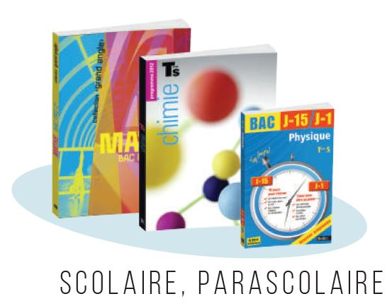
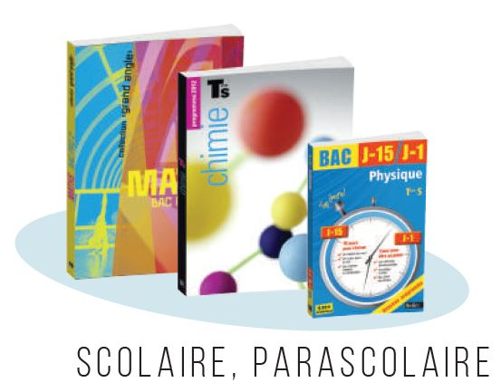
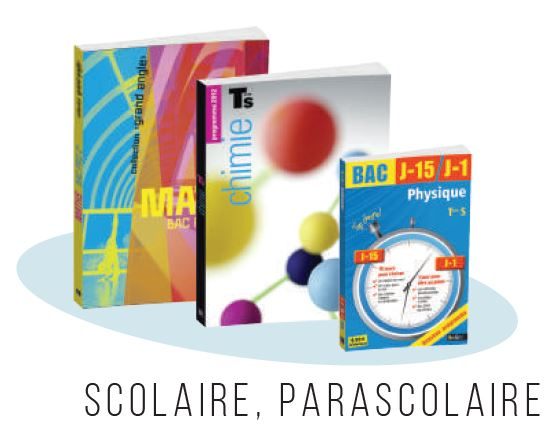

- Je suis convaincue que la qualité paie. gain de temps Je pense (bien évidemment) que la science mérite un soin particulier. J’ai traduction avec un contresens, des symboles manquants dans les formules, des légendes oubliées sur un schéma évidents pour tout éditeur de culture scientifique. Des prestataires qui "n’ont pas peur" des termes techniques
Les différents intervenants de la chaîne du livre : traducteurs, éditeurs, illustrateurs, iconographes, maquettistes...
- Un message passe mieux . Je suis très attentive à la forme.
J’aime, de la phrase juste à la musicalité de la langue.
Lorsque le rédacteur est un scientifique de formation, le jargon. Je combats sans relâche les quatre cavaliers de l’apocalypse qui s’insinuent partout (les verbes "pouvoir", "permettre", "devoir", "avoir"), pour les remplacer par des verbes plus variés et plus riches de sens. Je m’attache également à trouver des analogies percutantes.
la pédagogie l’explication meilleure que partout ailleurs , meilleure que Wikipédia
- Quant à la justesse du fond, j’essaie de faire mienne la devise de la Royal Society : Nullius in verba (« ne croire personne sur parole »). Grâce à ma culture scientifique généraliste, j’ai acquis des réflexes. Personne n’est infaillible. Je m’appuie parfois sur mon réseau d’auteurs pour vérifier certains points. S’il y a un loup, l’avis d’un spécialiste s’imposera peut-être...
- Au quotidien, je m’efforce de pratiquer une communication non violente, fondée sur l’empathie, l’authenticité et la responsabilité. Dans le cadre professionnel, il m’importe d’établir des échanges efficaces et de nouer une relation de confiance. Quelles que soient les difficultés rencontrées, je positive avec l’auteur et mes clients Le travail est l’occasion Par le passé, j’ai rencontré de nombreuses personnes inspirantes et des auteurs sympathiques. Mais je des personnalités difficiles, des manuscrits problématiques, des situations tendues. trouver des solutions la meilleure expérience possible à mes collaborateurs.